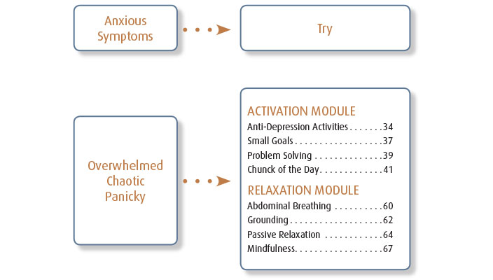

Finally, directed by the results of the care plan, or by the patient’s symptoms, you can provide skills support to your patient—providing them with strategies to help them manage their symptoms. Using 10 minute visits from then on, you can work to treat or prevent relapse. Your patient will do the work because the problem solving was a joint activity, and because they are working with you on what they will be doing. They will feel heard. There is healthy social contact, no professional distancing and no blaming.
The CBIS manual is divided into two parts: Assessment/Planning and Skills. The Skills component contains a number of one page Cognitive Behavioral Interpersonal Skills activities that can help Jan manage the challenges she is facing. The manual provides easy to use flowcharts to locate activities that might be appropriate for Jan.

Video courtesy of the Practice Support Program, an initiative of the GPSC (General Practice Services Committee) of BC, Canada